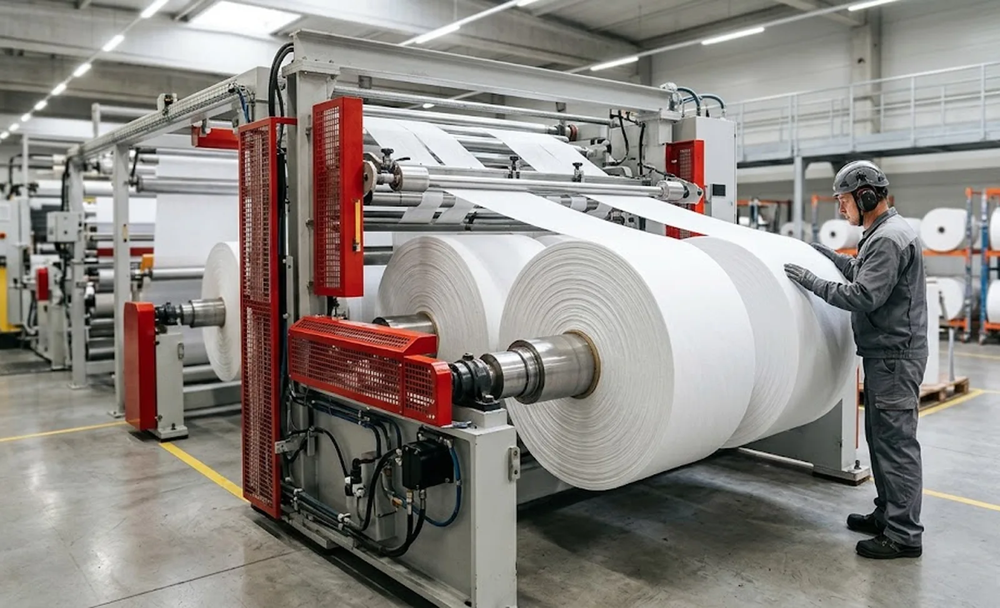
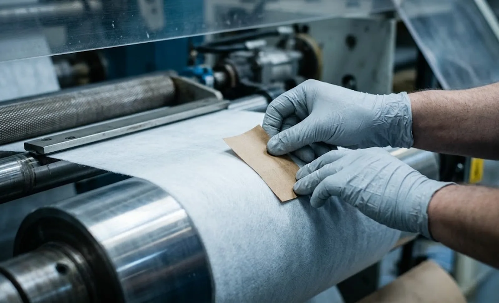

Published October 27, 2026 | By HDPTH Technical Editorial Team

On many nonwoven lines the quietest recurring cost is not blades but the cardboard core: purchased by the thousand, stored, loaded at every roll start, and discarded by your customer. Removing it sounds trivial. On the machine side it is a winding-method decision that reshapes the roll start, the rewind shafts or drums, and the control profile — which is why it belongs in the specification, not in the consumables ledger.
What coreless rewinding actually changes on the machine
A conventional cored rewind begins with an easy mechanical anchor: glue or tab the web to the core, and the core transmits torque and defines roundness from the first wrap. A coreless start has no such anchor. The leading edge of the web must be wrapped onto itself or bonded to a small paper start tab, then accelerated without slipping, tearing or creasing as tension ramps to the working level.
That is why coreless capability is a design property, not a switch. It shows up in the hardware as surface winding drums or a central-surface assist arrangement that supports the growing roll from outside, in a tab applicator or glue station sized to your line speed, and in drives tuned to build the first wraps softly. A cored machine can sometimes be adapted; more often the result is an unreliable start that operators fix by hand — a hidden labour cost that never appears on the offer.
Where coreless rolls win — and where they do not
The economics are most attractive when the core is a large share of consumable spend or a visible nuisance downstream. High-volume wipes converting, industrial roll goods in big diameters, and products marketed as core-free or reduced-packaging all reward the change: cores purchased, their freight and storage, and the disposal stream your customer handles after use. Coreless is not automatically better, though. Some downstream processes need a core for unwinding control or chucking — a coreless roll the customer cannot hold is not a product. Very soft, low-density nonwovens can deform without an internal stiffener, and very heavy rolls place more demand on the surface support. The decision is material- and customer-specific, so settle it with trials before the machine is ordered, not after commissioning.
Winding configuration decides the reliability of a coreless start
Three rewind architectures dominate. Pure center winding drives the roll from the shaft; without a core to grip, it needs a tab or self-wrap start and careful low-tension control, and suits firm materials at moderate diameters. Surface winding supports the roll on a driven drum and presses it with a lay-on element; the drum carries the torque, so the fragile first wraps are protected — the classical choice for coreless nonwoven rolls. Central-surface assist combines both and is often the most flexible at larger diameters.
Whatever the architecture, the control profile does the real work. Tension must taper as the roll grows so inner wraps are not crushed, nip pressure must be managed across the diameter range, and the start sequence — tab applied, edge bonded, ramp to speed — has to run automatically and identically every time. This is the physics discussed in our comparison of center winding vs surface winding, sharpened because there is no core to forgive a rough first wrap.

What to write into the specification
- Rewind architecture per position: surface, center or central-surface assist, stated for coreless start on your material.
- Start method: self-wrap logic or start tab applicator, with tab or adhesive specification and consumable cost.
- Start success rate as a percentage over a defined number of consecutive coreless starts, at production speed.
- Roll hardness and roundness targets at minimum and maximum diameter, measured on your material.
- Tension taper and nip pressure behaviour across the full diameter range in coreless mode.
- Witnessed coreless start test at FAT on your material, at maximum roll diameter and line speed.
Costing the change: cores out, control in
Build the comparison honestly. On the saving side: cores per year times unit price, their freight and warehousing, core handling labour, and the sustainability value your customer attaches to a core-free roll. On the cost side: any capital delta for surface or central-surface rewind hardware and tab application, a small tab or glue consumable, and tighter process discipline. In high-volume wipes and roll-goods work the core saving alone pays back quickly; at low volume or small diameters it may not, and a cored configuration remains the right answer.
Frame the choice inside your whole buying decision: the winding configuration interlocks with shaft selection, tension zones and diameter range — covered step by step in our nonwoven slitter rewinder buying guide, with roll dimensions treated in our guide to core size and finished roll diameter. The same winding hardware is applied across our nonwoven rewinding machines.
Deciding between cored and coreless rewinding?
Send HDPTH your material, roll diameter range and downstream handling method. We will model the core saving, recommend the winding configuration and document the coreless start criteria in the offer itself.
Submit Your Project InquiryFrequently asked questions
What is coreless rewinding on a slitter rewinder?
Coreless rewinding produces finished rolls without an internal cardboard core: the web itself forms the first wrap, or a small paper tab is bonded to the leading edge so the roll starts on itself. On the machine it changes the roll start sequence, shaft or chuck design and winding control, not just the consumable list.
Why do buyers ask for coreless rolls?
The core is a recurring material cost multiplied across every roll, a disposal step for the customer, and in hygiene products such as wipes it occupies package space that is otherwise sellable material. Removing cores also removes core inventory, storage and ordering from your own supply chain.
Can any slitter rewinder be converted to coreless rewinding?
No. A reliable coreless start depends on the machine’s ability to grip and accelerate the leading edge under controlled tension, which implies surface or central-surface assist winding, a start tab applicator or self-wrap logic, and tuned drives. Retrofitting a cored machine is possible in some cases, but a build designed for coreless start is the safer specification.
How do you keep a coreless roll round without a core?
Through winding pressure control and tension tapering rather than the core. Soft initial wraps are built up progressively, nip pressure is managed as diameter grows, and the roll is supported by a surface drum or closely spaced rewind positions. Hardness and roundness targets should be proven at acceptance on your material.
What does coreless rewinding change in cost per roll?
It removes the core and its handling from the variable cost and adds a small tab or adhesive consumable where used, plus slightly more demanding machine hardware. Model it as cores saved per year minus tab consumable and any capital delta, plus the disposal and freight savings of shipping material instead of cardboard.
Sources
- AIMCAL: web handling and converting education resources, including winding and roll structure
- TAPPI: winding and roll quality references for paper, film and nonwoven converting
- Converting Quarterly: articles on winding systems, nip control and roll hardness
- EDANA: nonwoven converting and sustainability resources relevant to core-free roll formats